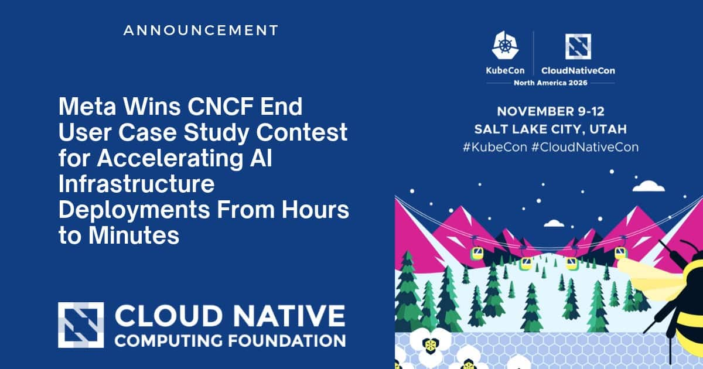
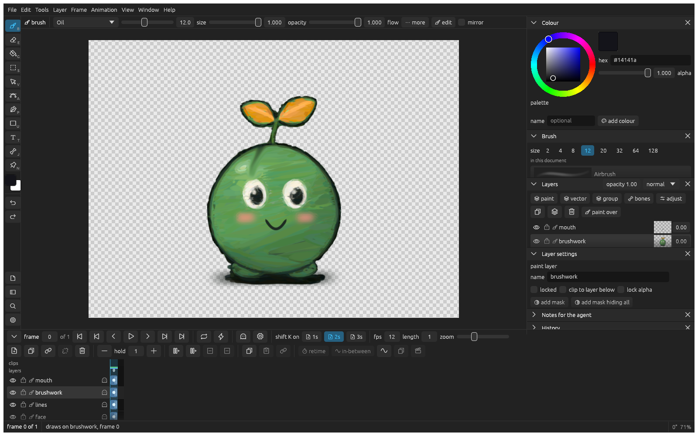
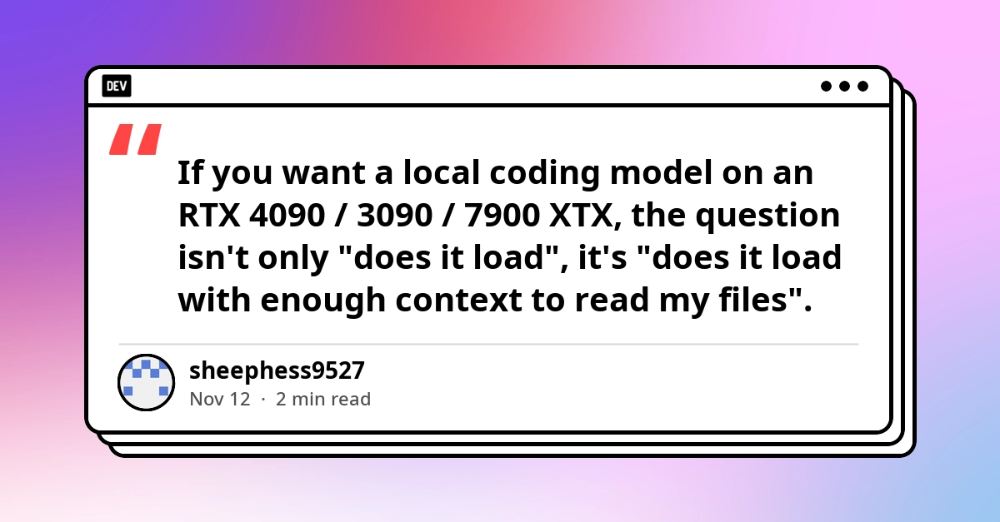
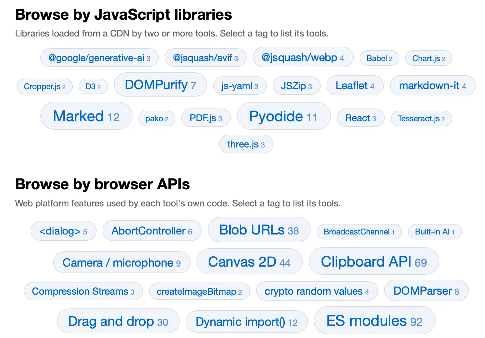
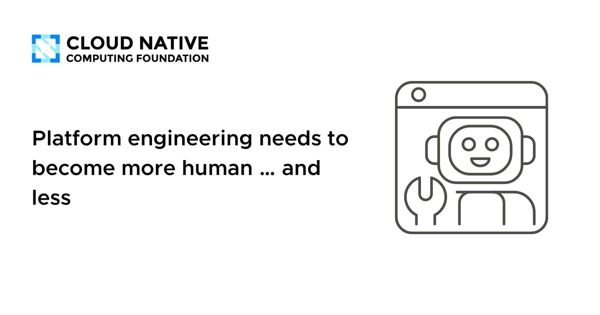
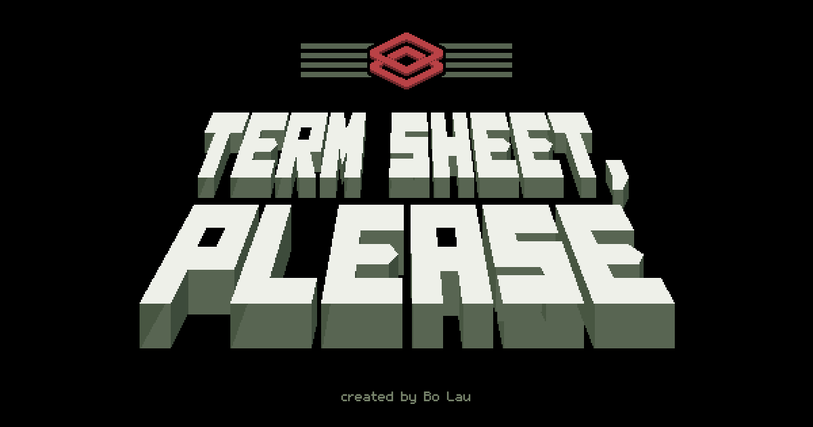
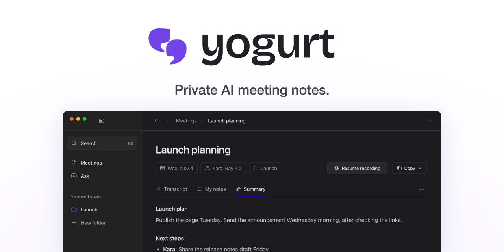
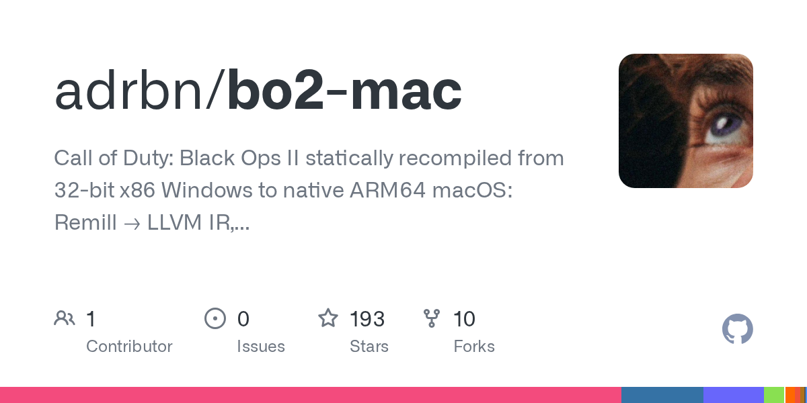
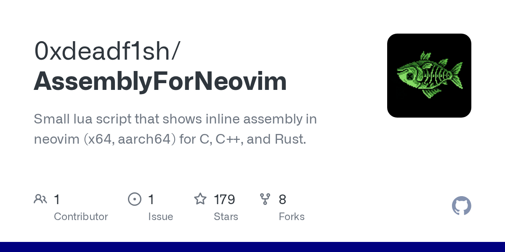

🔥 Top 3 (must read)
aws-emulator: an official local AWS emulator
AWS released an official emulator. It lets you run tests against a local copy of many AWS services, so you don't need to set up a paid API key. It is written in Rust by a large swarm of agents, with 29,684 commits in the first three weeks. Why it matters: It could replace mocks or paid sandbox accounts in your Node.js integration tests and CI pipelines. It is also a real-world example of software built mostly by agents.
S
Meta wins CNCF End User Case Study Contest: AI infra deploys from hours to minutes
Meta is building a GitOps platform with Argo CD and Kargo. It manages application delivery across 100 Kubernetes clusters for AI research and inference. Why it matters: This is a case study of Argo CD at scale. It is directly useful if your team already deploys with ArgoCD and Helm.

🛠 Tools & releases
llm 0.37.2
: fixes two security advisories in Simon Willison's LLM CLI. Upgrade if you use it.
S
OpenShell on Kubernetes: a guide for platform engineers
: how to run AI agents safely on Kubernetes. These agents run shells, install packages, and open network connections, often based on text they just read from the internet.

🤖 AI for developers
Gemini Decisions API
: Google joins Jev and OpenAI in the "decision model" category. It supports yes/no, choice, and rubric-scoring questions. It could be useful for LLM-as-judge checks in test pipelines.
S
Show HN: Klad, a paint app your coding agent can drive
(discussion): a source-available app designed to be controlled by a coding agent. It is an interesting pattern for making apps that agents can use.

Local coding LLM on a 24GB GPU: Qwen2.5-Coder 32B vs Qwen3-Coder 30B-A3B
: a practical look at the question that matters, which is not "does it load" but "does it load with enough context to read your files".

Browse tools.simonwillison.net by tag
: Simon used Fable 5.2 with tree-sitter to analyze 244 vibe-coded tools and tag each one by the JS APIs and libraries it uses.

👔 Engineering & teams
Ship It Conversations: Mallory Haigh on AI agents, harness and governance
: why context alone is not enough for agents, the harness and governance layers that run them, and why some platform teams should slow down before adding agents at all.
R
Platform engineering needs to become more human…and less
: an opinion piece on the human side of platform teams.

AI employee: how to check a news-processing workflow before publication
: test checkpoints for an AI content pipeline (input source, duplicate detection, draft, publish approval). These are proposed scenarios, not results from a real test run.
🎯 For me
aws-emulator for local and CI integration tests without paid AWS accounts. This is the strongest match for automation testing today.
Node.js LTS patches on 22, 24, and 26. Check which lines your services run.
Meta's Argo CD + Kargo case study and the Ship It agent-governance episode. Good EM material on GitOps at scale and on how teams should adopt agents.
💡 App ideas & indie builds
Term Sheet Please
(discussion): a game in the style of the "check documents at a border desk" genre, where you decide which YC startups to fund. Problem: VC judgment is hard to understand from the outside. It turns that into a fun game. Inspiration: take a real-world decision job and wrap it in a simple game loop.

Yogurt
(discussion): a free, private, open-source alternative to the Granola meeting-notes app. Problem: people want AI meeting notes but don't want their audio sent to a paid cloud service. Inspiration: "private, open-source version of a popular paid AI tool" is a proven pitch.

Black Ops II recompiled to native ARM64 macOS
(discussion): a static recompilation so a Windows game runs natively on Apple Silicon. Problem: Mac users can't play older Windows-only games well. Inspiration: shows how much demand there is for "make old thing X run on new platform Y".

AssemblyForNeovim
(discussion): Godbolt-style assembly output in a floating window inside Neovim, for C, C++, and Rust. Problem: switching to a browser to see compiler output breaks focus. Inspiration: bring a popular web tool into the editor where devs already work.

🎓 Try this
Try aws-emulator. Pick one Node.js service that talks to S3, SQS, or DynamoDB. Point its integration tests at the local emulator, then see if they can run in CI with no AWS credentials. Background: Simon Willison's write-up.